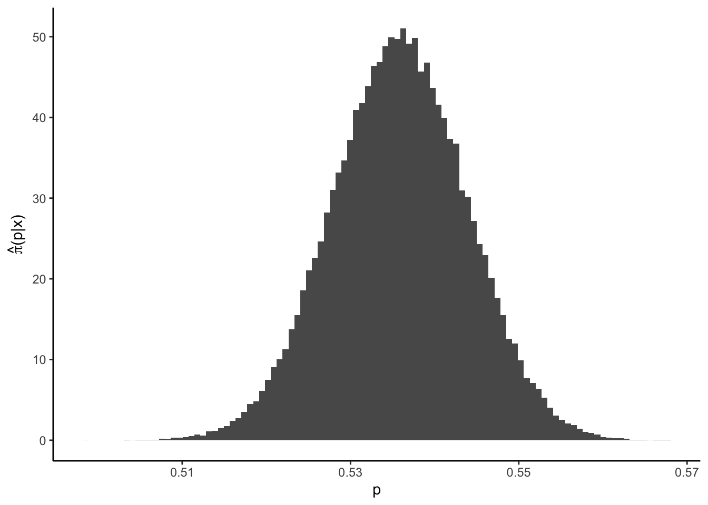

This document gives an example on the implementation of a hybrid Gibbs Sampler and a variety of MCMC based credible interval estimators. It is based on data gathered from FiveThirtyEight and made available here.
The problem is motivated by Scott M. Lynch (2007): Introduction to Applied Bayesian Statistics and Estimation for Social Scientists, Chapter 9.
In the 2020 presidential election, the state of Florida was considered a swing state. Due to is large population, it contributed 29 electoral votes to the electoral college and was therefore fiercely contested by both campaigns. The following table shows the results of selected polls and the general election.
df = read.csv("florida.csv")
df## SOURCE DATE BIDEN TRUMP
## 1 Insider Advantage 2020-11-02 188 192
## 2 Quinnipiac University 2020-11-01 779 696
## 3 Ipsos 2020-11-01 335 308
## 4 Redfield & Wilton Strategies 2020-10-28 773 601
## 5 General Election 2020-11-02 5295138 5667716Consider the following simplifying model. For each poll \(i = 1, \dots 4\), let the total number of likely voters \(n_i\in\mathbb{N}\) be known, \(X_i\in\mathbb{N}\) the number of votes for Biden and \(p_i\in (0,1)\) be the probability that an individual voter casts his vote for Biden. Assuming a binomial likelihood \(X_i | p_i \sim Bin(n_i, p_i)\) for each poll and independent surveys, this gives \[\begin{equation*} P(X = x| p ) \propto \prod_{i=1}^4 p_i^{x_i} (1-p_i)^{n_i-x_i} \end{equation*}\] Furthermore, let the prior be given by the product of \(Beta(a,b)\)-densities, so that \[\begin{equation*} \pi(p | a,b ) \propto \prod_{i=1}^4 \frac{\Gamma(a+b)}{\Gamma(a) + \Gamma(b)}\; p_i^{a-1}(1-p_i)^{b-1}. \end{equation*}\] Let us derive the full conditionals. The above specification gives the density \[\begin{align*} \pi(p, a, b| x) &\propto f(x|p)\pi(p|a,b)\pi(a,b) \propto \left(\frac{\Gamma(a+b)}{\Gamma(a) + \Gamma(b)}\right)^4 \Big( p_i^{x_i+a-1}(1-p_i)^{n_i - x_i + b-1} \Big)\pi(a,b). \end{align*}\] The full conditionals for \(p_i\), \(i=1, \dots, 4\) are thus given by \[\begin{equation*} \pi(p_i| x_i, a, b) \propto p_i^{x_i+a-1} (1-p_i)^{n_i-x_i+b-1}. \end{equation*}\] For the hyperparameters, \[\begin{align*} \pi(a | x, p, b) &\propto \left(\frac{\Gamma(a+b)}{\Gamma(a) + \Gamma(b)}\right)^4 \exp\left\{ a\sum_{i=1}^4 \ln(p_i) \right\}\pi(a,b),\\ \pi(b | x, p, a) &\propto \left(\frac{\Gamma(a+b)}{\Gamma(a) + \Gamma(b)}\right)^4 \exp\left\{ b\sum_{i=1}^4 \ln(1-p_i) \right\}\pi(a,b). \end{align*}\] For the distributional characterization of the hyperparameters, it is required to ensure both propriety and positivity of \(a,b>0\). For \(a\) and \(b\) independently Gamma-distributed, \[\begin{align*} \pi(a) &\propto a^{\alpha -1 }\exp(-\beta a),\\ \pi(b) &\propto b^{\gamma -1 }\exp(-\delta b). \end{align*}\] This gives the full conditionals \[\begin{align*} \pi(a | x, p, b) &\propto \left(\frac{\Gamma(a+b)}{\Gamma(a) + \Gamma(b)}\right)^4 a^{\alpha-1} \exp\left[ a\left\{ -\beta + \sum_{i=1}^4 \ln(p_i) \right\} \right],\\ \pi(b | x, p, a) &\propto \left(\frac{\Gamma(a+b)}{\Gamma(a) + \Gamma(b)}\right)^4 b^{\gamma-1} \exp\left[ b\left\{ -\delta + \sum_{i=1}^4 \ln(1-p_i) \right\} \right]. \end{align*}\] Since it is reasonable to expect that \(p_i\) is close to \(0.5\), we may set \(\alpha = \gamma = 6.25\) and \(\beta = \delta = 0.025\).
Eventually, the hierarchy is completely specified with Beta and Gamma priors. We have obtained all full conditionals.
However, it is not clear how to draw samples from the full conditionals for \(a\) and \(b\). This leads to the hybrid Gibbs Sampler. In each step in which it is to be sampled from \(\pi(a|x,p,b)\) and \(\pi(b|x,p,a)\), a random walk Metropolis-Hastings algorithm is run. For both Markov chains \((a_n)\) and \((b_n)\), we can take a Gaussian proposal which is sufficiently spread out, e.g. \(a_{n+1} \sim \mathcal{N}(a_n, 20)\) for \((a_n)\).
We implement the algorithm as outlined above. It takes the votes for Biden (x) and total votes (n) as arguments.
Note that the conditional(s) ln.pi is implemented in log-transformed form for computational purposes. The full conditionals for \(\pi(a|x,p,b)\) and \(\pi(b|x,p,a)\) coincide if the arguments are adapted, which is why the single function ln.pi is enough.
The Metropolis-Hastings step is straight-forward: First, a proposal is generated. If it is negative, rho would be zero. Since we implemented only the log-transformed version ln.rho, such proposals are immediately rejected without generating a uniform random variable. If the proposal is positive (the else-statement), the acceptance probability is calculated and evaluated on a uniformly generated random variable.
HybridGibbs <- function(x, n){
np <- length(x) #number of polls
### full conditionals
ln.pi <- function(a, b, p) { # full conditional for both a and b, use "p" and "1-p"
-np * lbeta(a, b) + log(a) * (6.25 - 1) + a * (-0.025 + sum(log(p)))
}
### set up
N <- 1e5 #length of chain
P <- matrix(NA, nrow = N, ncol = np) #states of Markov chain for p
a <- b <- rep(NA, N) #states of Markov chain for a and b
### initial values
P[1, ] <- x / n
b[1] <- a[1] <- 10
for (i in 2:N) {
## MH for a
y <- rnorm(1, a[i - 1], 20)
if (y < 0) a[i] <- a[i - 1]
else {
ln.rho <- ln.pi(y, b[i - 1], P[i - 1,]) - ln.pi(a[i - 1], b[i - 1], P[i - 1,])
if (log(runif(1)) < ln.rho) a[i] <- y else a[i] <- a[i - 1]
}
## MH for b
y <- rnorm(1, b[i - 1], 20)
if (y < 0) b[i] <- b[i - 1]
else {
ln.rho <- ln.pi(y, a[i], 1 - P[i - 1,]) - ln.pi(b[i - 1], a[i], 1 - P[i - 1,])
if (log(runif(1)) < ln.rho) b[i] <- y else b[i] <- b[i - 1]
}
## full conditional for p
P[i,] <- rbeta(np, (x + a[i]),(n - x + b[i]))
}
return(list(P = P,a = a,b = b))
}Now, we can run the algorithm on the data. We print the Bayes estimator under squared error loss for each \(p_i\), \(i=1, \dots, 4\).
x = df$BIDEN[-5]
n = x + df$TRUMP[-5]
Poll4 = HybridGibbs(x, n)
colMeans(Poll4$P) #Bayes estimator## [1] 0.5145265 0.5287305 0.5250237 0.5542323In all four polls we observe that \(\widehat{p}_i > 0.5\), even in the one from Insider Advantage. The list Poll4 can be further investigated to check for convergence using graphical tools.
We continue to pool all polls into a single survey to proceed. It is obvious that only the inputs have to be aggregated, the model doesn’t change after setting \(i=1\).
PollPool = HybridGibbs(sum(x), sum(n))
colMeans(PollPool$P) #Bayes estimator## [1] 0.5358294Unsurprisingly, the pooled-poll Bayes estimator is not more informative than the separated poll estimators.
We want to investigate if the additional flexibility gained with the third level of the hierarchy, the Gamma priors on \(a\) and \(b\), is contributing to a better estimation. In order to do so, we consider the two-level hierarchy and set
# set prior and likelihood parameters
alpha <- 0.05
a <- b <- 250
# set posterior parameters
a.star <- a + sum(x[1:4])
b.star <- b + sum(n[1:4]) - sum(x[1:4])In the two-level hierarchy, the posterior is known. Therefore, we can directly compute the HPD credible interval.
# the HPD credible interval is the minimizer or
Q <- function(arg, a0 = alpha, a = a.star, b = b.star) {
abs(dbeta(arg[2], a, b) - dbeta(arg[1], a, b)) +
abs(pbeta(arg[2], a, b) - pbeta(arg[1], a, b) - (1 - a0))
}
CI0 <- optim(qbeta(c(alpha/2, 1 - alpha/2), a.star, b.star), Q,
lower = c(0,0),
upper = c(1,1),
method = "L-BFGS-B")$par
CI0## [1] 0.5169908 0.5465681Now, we like to compare the derived analytic HPD for the two-level hierarchy with the MCMC based estimations in the three level hierarchy. First, we gather all the variables needed.
# gather params
p <- PollPool$P #Markov chain of interest
a <- PollPool$a #Markov chain of hyperparameters
b <- PollPool$b #Markov chain of hyperparameters
a.post <- a + sum(x) #posterior params
b.post <- b + sum(n) - sum(x) #posterior paramsThe simple MCMC based credible set estimators are taken from Eberly & Casella. We consider the naive (CI1), order statistics based (CI2), CMDE (CI3) and weighted average (CI4) estimator.
# Naive
lb = qbeta(alpha/2, (x + a),(n - x + b))
ub = qbeta(1 - alpha/2, (x + a),(n - x + b))
CI1 = c(mean(lb), mean(ub))
# Order statistics estimator
o.p = sort(p)
N = 1e5
CI2 = c(o.p[N * alpha / 2], o.p[N * (1 - alpha / 2)])
# CMDE
Q = function(arg) {
abs(mean(pbeta(arg[2], a.post, b.post) - pbeta(arg[1], a.post, b.post)) -
(1 - alpha))
}
CI3 = optim(CI2, Q,
lower = c(0,0),
upper = c(1,1),
method = "L-BFGS-B")$par
# weighted average construction
lbw = mean(lb * dbeta( lb , a.post, b.post)) / mean(dbeta( lb , a.post, b.post))
ubw = mean(ub * dbeta( ub , a.post, b.post)) / mean(dbeta( ub , a.post, b.post))
CI4 = c(lbw, ubw)
require('tidyverse')
tbl0 = rbind(CI1, CI2, CI3, CI4) # variants of CI
tbl0 = cbind(tbl0, apply(tbl0, 1, diff)) # add length
rownames(tbl0) = c("Naive", "Order", "CMDE", "Weight")
colnames(tbl0) = c("lower", "upper", "diff")
tbl0## lower upper diff
## Naive 0.5056176 0.5590691 0.053451470
## Order 0.5201440 0.5515138 0.031369850
## CMDE 0.5201440 0.5515138 0.031369850
## Weight 0.5336654 0.5414075 0.007742125We know that the first credible set cannot be trusted. Trustable, and shortest, is the weighted interval. Remarkably, none of the credible sets includes includes areas of the posterior below \(0.5\)!
We can also compute the Chen-Shao HPD credible set.
p = sort(p)
N.cand = round(N * (1 - alpha)) # number of candidate HPDs
C = matrix(NA, nrow = (N - N.cand), ncol = 2)
for (i in 1:(N - N.cand)) C[i,1:2] = c(p[i], p[i + N.cand])
diffC = apply(C, 1, "diff") #lengths of candidate intervals
idx = which.min(diffC)
CI5 = C[idx,] # Chen-Shao HPD
tbl1 = rbind(CI0, CI5) # variants of CI
tbl1 = cbind(tbl1, apply(tbl1, 1, diff)) # add difference
rownames(tbl1) = c("Analytic", "Chen-Shao")
colnames(tbl1) = c("lower", "upper", "diff")
tbl1## lower upper diff
## Analytic 0.5169908 0.5465681 0.02957723
## Chen-Shao 0.5200886 0.5514537 0.03136509The analytic HPD is at a different location compared to the Chen-Shao one. However, recall that the underlying model is different, therefore, this should not be surprising. It is noteworthy that the Chen-Shao-HPD is larger than the weighted CI! This can occur since both intervals’ properties are asymptotical. In our case it is an indication that the investigated data set exhibits a symmetric posterior, so that HPD and simple credible intervals (almost) coincide:
require("latex2exp")
ggplot() + theme_classic() + geom_histogram(aes(p, ..density..), bins = 100) +
labs(y = unname(TeX("$\\hat{\\pi}(p|x)$")))